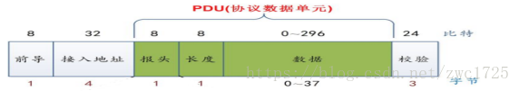

BLE的底层原理
我已经翻译了一篇文章：BLE技术介绍 里面介绍了BLE在GAP和GATT上的实现，这篇文章希望能够系统探索BLE从应用层到物理层的基本实现，以及其他需要补充的一些内容。最权威的资料来源于Bluetooth Low Energy Software Developer’s Guide
蓝牙协议栈描述
协议栈的层次如下：
那么这里涉及到2个重要的概念：host和controller。 一般而言，controller是指跑在蓝牙模块上，更底层的那部分协议栈，而host是指跑在AP芯片，更接近应用层的部分。一般的移动应用开发只需要和host打交道，而host和controller可以通过HCI协议进行通信。其他的协议栈方案请参见引用文档。
HCI协议是一个传输层协议，位于蓝牙高层协议和低层协议之间，提供了对基带控制器和链路管理器的命令以及访问蓝牙硬件的统一接口,它是我们实现自己的蓝牙设备要接触的第一个蓝牙协议,起着承上启下的作用。参见：蓝牙HCI协议
下面将对各层协议进行一定的描述。
物理层
蓝牙是无线通信的一种，所以其通信介质是某个频率范围的频带资源. 物理层是通过BLE射频信号实现的，本身只负责发送和接收数据， 蓝牙是一种工业和民用，所以使用了免费的ISM频段, 在2400MHz -2480MHz范围。为了同时支持多个设备，将频段分为40份，每份的带宽为2MHZ，也就是RD Channel. 可以看到，蓝牙所分配的频段都是在2.4GHZ的。 BLE使用跳频技术来解决频段拥挤问题,这里不多展开。
BLE广播信道一共有3个，分别为37、38和39信道，频点分布分别为2402MHz、2426MHz和2480MHz，这3个信道用于发送广播信息，广播信道分散在距离较远的频段上，过度的集中会导致如果该频段受干扰严重可能广播就无法进行的情况，分散的目的是为了增加容错率。剩下的37个频点用于通信，即连接以后用于数据交流。
链路层（Link Layer）
在物理层已经解决了基本的通信问题，但是蓝牙所在频段非常拥堵，干扰多，通信实体多，因此链路层需要解决以下问题：
-
诸多通信实体的Channel共享问题;
-
构建两个通信实体的逻辑链路(Logical Link);
-
数据传输可能损毁、丢失，需要提供校验、重传等机制，确保数据传输的可靠性。
在链路层抽象出了5种状态：
-
Standby State: 初始状态，既不发送数据，也不接收数据.
-
Advertising State: 可以通过广播通道发送数据的状态，由Standby状态进入。
-
Scanning State： 可以通过广播通道接收数据的状态，由Standby状态进入。
-
Initiaing State： 由Standby状态进入，只能接收Advertiser广播的connectable的数据，并在接收到数据后，发送连接请求，以便和Advertiser建立连接。当连接成功后，Initiater和对应的Advertiser都会切换到Connection状态。可以理解为待连接状态。
-
Connection State： 已连接状态，和实体建立了单独的通信通道。由Initiating或者Advertising自动切换而来。通道断开后，会重新回到Standby状态。
处于Connection状态的双方，分别有2种角色：
-
Initiater方称作Master.
-
Advertiser方称作Slave.
从横向看，BLE协议栈的每个层次都是可以互相通信的实体；在每个层次上，都可能有状态定义，甚至有同名的状态。只需要多加注意即可。
空中接口协议（Air Interface Protocol）
AIP定义了物理层上收发的数据包的格式,并且这种格式对于广播频段和数据频段都是适用的。

这些格式从前到后分别为：
-
Preamble: 1 byte, 前导帧。根据物理层行为取值为0x55或者0xAA.
-
Access Address: 4 byte, 标记数据包或广播包.广播包该字段固定为0x8E89BED6.数据包的字段将是由initiator在建立连接时生成的32bit的随机值.
-
PDU： Protocol Data Unit,协议数据单元，下面将会单独描述。
-
CRC校验位：3个字节，用于校验数据是否丢失或修改。
PDU描述
这张图比前面一张描述的更加详细，从图中可以看到，从第3列开始的Advertising Header后连续4列即为PDU的内容。包括了：
-
Advertising Header: 1 byte，定义了PDU的type等，不再过多展开。参见：BLE空口包格式
-
Payload Length: 1 byte, 定义了PDU的长度。需要注意的是广播包的PDU最多为37个字节。
-
Device Address: 6个字节，即蓝牙的mac地址。所以广播包数据最长只能31个字节。（这里PDU并未计算Header和Payload Length）
-
Advertising Data: 数据包或广播包的数据。如果是广播包，该部分最大31个字节。如果是数据包，该部分最大可达257个字节。
链路层的包长度范围为9到264个字节(不计算Preamble,PDU范围2~257 Bytes).
数据过滤机制
随着通信设备的增多，空中的广播数据将会呈几何级的增长，为了避免资源的浪费（特别是BLE Host），有必要在Link Layer过滤掉一些数据包，例如根据蓝牙地址，过滤掉不是给自己的packet。
链路控制协议（Link Layer Control）
该协议用来管理、控制两个链路层实体的connection：
-
更新connection参数；
-
更新连接使用的跳频图谱，使用哪些Channels;
-
执行链路加密相关过程。
主机与控制器接口（HCI, Host Controller Interface）
HCI协议连接Host和Controller，将Host的操作转化为HCI指令传给Controller, BLE协议规定了HCI的指令集。 一般而言，BLE协议栈规划的芯片实现方案有单芯片方案，双芯片方案和三芯片方案。双芯片方案会有经典的HCI协议层，表示如下：
其他的方案可能会舍弃HCI协议，Host和Controller并没有明确的界限。
逻辑链路控制和适配协议（L2CAP, Logic Link Control and Adaption Protocol）
这是蓝牙系统的核心协议，提供了以下功能： Logical Link Control and Adaptation Protocol也称为逻辑链路控制和适配协议，是蓝牙系统中的核心协议， 1）Protocol/channel multiplexing，协议/通道的多路复用； 2）Segmentation and reassembly，上层应用数据（L2CAP Service Data Units，SDUs）的分割（和重组），生成协议数据单元（L2CAP Packet Data Units，PDUs），以满足用户数据传输对延时的要求，并便于后续的重传、流控等机制的实现； 3）Flow control per L2CAP channel，基于L2CAP Channel的流控机制； 4）Error control and retransmissions，错误控制和重传机制； 5）Support for Streaming，支持流式传输（如音频、视频等，不需要重传或者只需要有限重传）； 6）Fragmentation and Recombination，协议数据单元（PDUs）的分片（和重组），生成符合Link Layer传输要求的数据片（长度不超过251）； 7）Quality of Service，QoS的支持。 简单总结就是对上层数据打包和重组，通道协议复用、重传流控、错误校验等功能。
安全管理层(Security Manager)
安全服务层，提供配对和秘钥的分发，实现安全连接和数据交换；配对绑定都是由这一层管理.
ATT/GATT/GAP协议
这部分协议是上层应用中主要接触的内容，请参见相关的翻译： BLE技术介绍
前面的内容描述有的较为模糊，但是最近事情非常多，并且接触到了一些新的蓝牙的feature。以后会继续完善该部分内容。
待解决疑问
-
Bluetooth 4.0中每个包的20个字节是怎么来的？后面的协议如何扩展了该内容？
-
如何确保BLE传输的安全性？(参考:BLE安全机制)
-
iOS中的CTKD是什么？
-
Bond connection是什么？